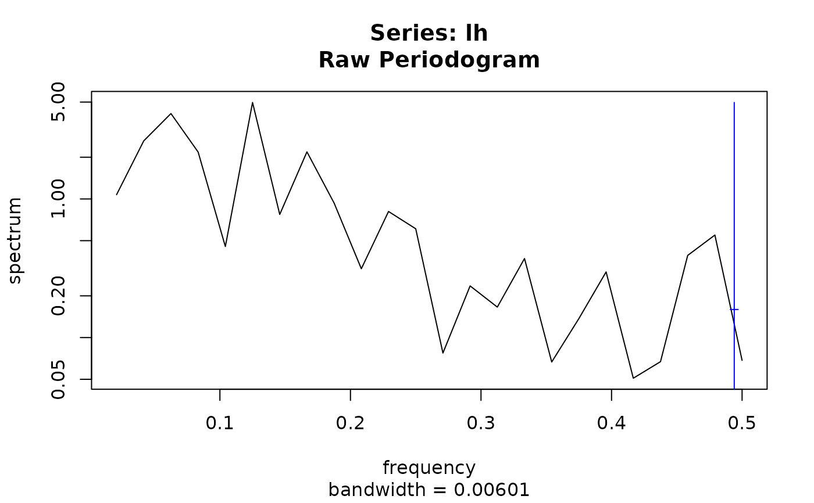

Spectral Density
spectrum.RdEstimate the spectral density of a time series or compute the spectral density associated with a time series model.
Usage
spectrum(x, standardize = TRUE, ...)
# S3 method for default
spectrum(x, standardize = TRUE, raw = TRUE, taper = 0.1,
demean = FALSE, detrend = TRUE, ...)
# S3 method for genspec
print(x, n.head = min(length(x$spec), 6), sort = TRUE, ...)
# S3 method for Arima
spectrum(x, standardize = TRUE, ...)
# S3 method for ArmaModel
spectrum(x, standardize = TRUE, ...)
# S3 method for SarimaModel
spectrum(x, standardize = TRUE, ...)
# S3 method for function
spectrum(x, standardize = TRUE, param = list(), ...)Arguments
- x
a model or a univariate or multivariate time series.
- standardize
if
TRUE, the default method standardises the time series before computing the periodogram, while the methods for models scale the spectral density so that it is a probability density function.- raw
-
if
TRUE, the default, compute a completely raw periodogram, unless further arguments request otherwise, see section Details. - taper,demean,detrend
-
see
spec.pgramand section ‘Details’. - ...
further arguments for the default method. Currently not used by other methods.
- n.head
how many rows to print?
- sort
TRUE,FALSEor"max", see section ‘Details'’.- param
-
a named list, specying model parameters for the
"function"method, see section ‘Details’.
Details
spectrum in package sarima is a generic function with a
default method its namesake in package stats, see
spectrum for a full description of its
functionality.
Autoprinting of objects returned by spectrum prints concise
information and plots the spectrum. This means that a plot is
produced, for example, when the result of a call to spectrum()
is not assigned to a variable or if a command containing just the name
of the object is executed. If you don't want the graph, just assign
the result to a variable. For more control over the printing (for
example, number of digits) use print(object, ...)
explicitly. In that case no plot is produced. If additional graphical
parameters are desired, call plot, ....
All methods print some basic information about the object and a table giving the most influential frequencies and their contributions to the spectrum.
Methods for objects representing ARIMA and SARIMA models (fitted or
theoretical) compute the corresponding spectral densities. For
non-stationary models, the spectral density for the stationary part.
These methods for spectrum return objects from class
"Spectrum". If standardize = TRUE the spectral density
is scaled, so that it integrates to one (and so is a probability
density function). For fitted models confidence bands are not
computed currently.
The method for class "function" can be used to create objects
from class "Spectrum" using a user specified function. The
first argument of that function needs to be a vector of frequencies
for which to calculate the spectrum. It is conventionally called
freq but this is not required. If there are parameters they
should not be part of the signature of the function but need to be
listed and given values as a named list via argument param, see
the examples for class "Spectrum". This method is
somewhat experimental but the restrictions might be relaxed in a
future release.
The rest of this section describes the default method. For futher
details on the other methods see "Spectrum".
The default method for spectrum
The default method is a wrapper for stats::spectrum().
The default method returns an object from class "genspec". It
inherits from "spec", the class returned by
stats::spectrum, and adds some additional components. The
main difference though is that it has a print method, which plots
the object as discussed above. raw = FALSE with no further
arguments is equivalent to stats::spectrum(object) and
computes a raw periodogram (for the standardised time series if
standardize = TRUE). This still detrends and tapers the
series though. raw = TRUE sets detrend to
FALSE, taper to zero, and demean to
TRUE, to compute a ‘completely raw’ periodogram. In
both cases, further arguments are respected.
Argument sort of the print method for "genspec"
controls the sorting order of the columns of the printed table. If
FALSE, no sorting is done. If TRUE, the spectrum is
sorted in decreasing order, so the first row contains the frequency
with the highest value of the spectrum. If "max", the local
maxima are found and sorted in decreasing order, followed by the
rest, also sorted in decreasing order. Note that due to aliasing the
local maxima may be shifted from the “true” frequency
(e.g. not be exactly on the harmonics of the number of
seasons). Tapering and smoothing parameters may help.
The plot method for class "genspec" is inherited from that
for "spec", see ?plot.spec.
Value
for the default method, an object of class "genspec", which
inherits from "spec", and contains the following additional
components:
- standardized
TRUE or FALSE,
- nseasons
number of seasons,
- freq.range
numeric(2), the frequency range -(-m/2, m/2], wherem = floor(frequency(x));
for the remaining methods, an object of class "Spectrum".
Examples
## spectral density of the stationary part of a fitted 'airline model'
fit0 <- arima(AirPassengers, order = c(0,1,1),
seasonal = list(order = c(0,1,1), period = 12))
spectrum(fit0)
#> standardized spectral density of the following ARMA(0,13) model:
#> ar coef:
#> ma coef: -0.3087 0 0 0 0 0 0 0 0 0 0 -0.1074 0.03317
#> sigma2: 135.4237
#>
#>
#>
#> Peaks:
#> freq spec period
#> [1,] 0.04330709 0.5534585 23.090909
#> [2,] 0.12992126 0.7355095 7.696970
#> [3,] 0.21259843 1.0438583 4.703704
#> [4,] 0.29527559 1.3951830 3.386667
#> [5,] 0.37795276 1.6971778 2.645833
#> [6,] 0.46062992 1.8701110 2.170940
#>
#> Troughs:
#>
#> freq spec period
#> [1,] 0.00000000 0.3436561 0.000000
#> [2,] 0.08267717 0.4023487 12.095238
#> [3,] 0.16535433 0.5631871 6.047619
#> [4,] 0.24803150 0.7843876 4.031746
#> [5,] 0.33070866 1.0084214 3.023810
#> [6,] 0.41732283 1.1732882 2.396226
#> [7,] 0.50000000 1.2314609 2.000000
#>
#> max peak/min trough:
#> 5.441809
#>
## spectral densities of some ARMA models models from Chan and Gray ().
## (TODO: complete the reference)
spectrum(ArmaModel(ma = c(-1, 0.6), sigma2 = 1))
#> standardized spectral density of the following ARMA(0,2) model:
#> ar coef:
#> ma coef: -1 0.6
#> sigma2: 1
#>
#>
#>
#> Peaks:
#> freq spec period
#> [1,] 0.0 0.1525424 0
#> [2,] 0.5 2.8644068 2
#>
#> Troughs:
#>
#> freq spec period
#> [1,] 0.1338583 0.03954802 7.470588
#>
#> max peak/min trough:
#> 72.42857
#>
spectrum(ArmaModel(ar = 0.5, sigma2 = 1))
#> standardized spectral density of the following ARMA(1,0) model:
#> ar coef: 0.5
#> ma coef:
#> sigma2: 1
#>
#>
#>
#> Peaks:
#> freq spec period
#> [1,] 0 3 0
#>
#> Troughs:
#>
#> freq spec period
#> [1,] 0.5 0.3333333 2
#>
#> max peak/min trough:
#> 9
#>
spectrum(ArmaModel(ar = 0.5, ma = -0.8, sigma2 = 1))
#> standardized spectral density of the following ARMA(1,1) model:
#> ar coef: 0.5
#> ma coef: -0.8
#> sigma2: 1
#>
#>
#>
#> Peaks:
#> freq spec period
#> [1,] 0.5 1.285714 2
#>
#> Troughs:
#>
#> freq spec period
#> [1,] 0 0.1428571 0
#>
#> max peak/min trough:
#> 9
#>
spectrum(new("SarimaModel", ar = 0.5, sar = 0.9, nseasons = 12, sigma2 = 1))
#> standardized spectral density of the following ARMA(13,0) model:
#> ar coef: 0.5 0 0 0 0 0 0 0 0 0 0 0.9 -0.45
#> ma coef:
#> sigma2: 1
#>
#>
#>
#> Peaks:
#> freq spec period
#> [1,] 0.00000000 56.974957 0.000000
#> [2,] 0.08267717 30.563559 12.095238
#> [3,] 0.16535433 10.196422 6.047619
#> [4,] 0.24803150 3.863367 4.031746
#> [5,] 0.33464567 4.310839 2.988235
#> [6,] 0.41732283 5.511054 2.396226
#> [7,] 0.50000000 6.330551 2.000000
#>
#> Troughs:
#>
#> freq spec period
#> [1,] 0.04330709 0.13810376 23.090909
#> [2,] 0.12598425 0.07219447 7.937500
#> [3,] 0.20866142 0.03973364 4.792453
#> [4,] 0.29133858 0.02618904 3.432432
#> [5,] 0.37401575 0.02023360 2.673684
#> [6,] 0.45669291 0.01789584 2.189655
#>
#> max peak/min trough:
#> 3183.698
#>
mo <- new("SarimaModel", ma = -0.4, sma = -0.9, nseasons = 12, sigma2 = 1)
sp1.mo <- spectrum(mo)
## this also plots the object. (if you are reading the web version, generated
## by pkgdown, it may not be showing some of the graphs,
## I haven't figured out why.)
show(sp1.mo) # equivalently, just sp1.mo
#> standardized spectral density of the following ARMA(0,13) model:
#> ar coef:
#> ma coef: -0.4 0 0 0 0 0 0 0 0 0 0 -0.9 0.36
#> sigma2: 1
#>
#>
#>
#> Peaks:
#> freq spec period
#> [1,] 0.04330709 0.6670335 23.090909
#> [2,] 0.12598425 1.0264726 7.937500
#> [3,] 0.20866142 1.6409588 4.792453
#> [4,] 0.29133858 2.3473830 3.432432
#> [5,] 0.37401575 2.9570034 2.673684
#> [6,] 0.45669291 3.3067228 2.189655
#>
#> Troughs:
#>
#> freq spec period
#> [1,] 0.00000000 0.001714612 0.000000
#> [2,] 0.08267717 0.002705604 12.095238
#> [3,] 0.16535433 0.006755661 6.047619
#> [4,] 0.24803150 0.016318029 4.031746
#> [5,] 0.33464567 0.014022696 2.988235
#> [6,] 0.41732283 0.010777767 2.396226
#> [7,] 0.50000000 0.009335111 2.000000
#>
#> max peak/min trough:
#> 1928.554
#>
print(sp1.mo)
#> standardized spectral density of the following ARMA(0,13) model:
#> ar coef:
#> ma coef: -0.4 0 0 0 0 0 0 0 0 0 0 -0.9 0.36
#> sigma2: 1
#>
#>
#>
#> Peaks:
#> freq spec period
#> [1,] 0.04330709 0.6670335 23.090909
#> [2,] 0.12598425 1.0264726 7.937500
#> [3,] 0.20866142 1.6409588 4.792453
#> [4,] 0.29133858 2.3473830 3.432432
#> [5,] 0.37401575 2.9570034 2.673684
#> [6,] 0.45669291 3.3067228 2.189655
#>
#> Troughs:
#>
#> freq spec period
#> [1,] 0.00000000 0.001714612 0.000000
#> [2,] 0.08267717 0.002705604 12.095238
#> [3,] 0.16535433 0.006755661 6.047619
#> [4,] 0.24803150 0.016318029 4.031746
#> [5,] 0.33464567 0.014022696 2.988235
#> [6,] 0.41732283 0.010777767 2.396226
#> [7,] 0.50000000 0.009335111 2.000000
#>
#> max peak/min trough:
#> 1928.554
#>
print(sp1.mo, digits = 4)
#> standardized spectral density of the following ARMA(0,13) model:
#> ar coef:
#> ma coef: -0.4 0 0 0 0 0 0 0 0 0 0 -0.9 0.36
#> sigma2: 1
#>
#>
#>
#> Peaks:
#> freq spec period
#> [1,] 0.04331 0.667 23.091
#> [2,] 0.12598 1.026 7.938
#> [3,] 0.20866 1.641 4.792
#> [4,] 0.29134 2.347 3.432
#> [5,] 0.37402 2.957 2.674
#> [6,] 0.45669 3.307 2.190
#>
#> Troughs:
#>
#> freq spec period
#> [1,] 0.00000 0.001715 0.000
#> [2,] 0.08268 0.002706 12.095
#> [3,] 0.16535 0.006756 6.048
#> [4,] 0.24803 0.016318 4.032
#> [5,] 0.33465 0.014023 2.988
#> [6,] 0.41732 0.010778 2.396
#> [7,] 0.50000 0.009335 2.000
#>
#> max peak/min trough:
#> 1929
#>
plot(sp1.mo)
plot(sp1.mo, standardize = FALSE)
## the object can be used as a function:
head(sp1.mo())
#> [1] 0.001714612 0.002554241 0.005068983 0.009246422 0.015065928 0.022498754
sp1.mo(seq(0, 0.5, length.out = 12))
#> [1] 0.001714612 0.661065422 0.068597027 0.905495120 0.418742992 1.029489635
#> [7] 1.253567502 0.755017203 2.396990318 0.258191527 3.247318393 0.009335111
sp1.mo(seq(0, 0.5, length.out = 12), standardize = FALSE)
#> [1] 0.0036000 1.3879730 0.1440263 1.9011776 0.8791928 2.1615164 2.6319903
#> [8] 1.5852341 5.0327209 0.5420989 6.8180697 0.0196000
sarima1b <- new("SarimaModel", ar = 0.9, ma = 0.1, sar = 0.5, sma = 0.9,
nseasons = 12, sigma2 = 1)
spectrum(sarima1b)
#> standardized spectral density of the following ARMA(13,13) model:
#> ar coef: 0.9 0 0 0 0 0 0 0 0 0 0 0.5 -0.45
#> ma coef: 0.1 0 0 0 0 0 0 0 0 0 0 0.9 0.09
#> sigma2: 1
#>
#>
#>
#> Peaks:
#> freq spec period
#> [1,] 0.00000000 51.42130332 0.000000
#> [2,] 0.08267717 2.02154462 12.095238
#> [3,] 0.16535433 0.51509112 6.047619
#> [4,] 0.24803150 0.22927643 4.031746
#> [5,] 0.33464567 0.13874701 2.988235
#> [6,] 0.41732283 0.10481430 2.396226
#> [7,] 0.50000000 0.09535326 2.000000
#>
#> Troughs:
#>
#> freq spec period
#> [1,] 0.04330709 4.917941e-03 23.090909
#> [2,] 0.12598425 4.133602e-04 7.937500
#> [3,] 0.20866142 1.086967e-04 4.792453
#> [4,] 0.29133858 5.822878e-05 3.432432
#> [5,] 0.37401575 5.537596e-05 2.673684
#> [6,] 0.45669291 7.189623e-05 2.189655
#>
#> max peak/min trough:
#> 928585.3
#>
## default method for spectrum()
## frequency range is c(-1/2, 1/2] since frequency(x) = 1
frequency(lh)
#> [1] 1
spectrum(lh)
#> Estimated spectral density
#> series: lh
#> method: Raw Periodogram
#> nseasons: 1
#> frequency range: (0,0]
#>
#> sort method for the table: decreasing magnitudes
#>
#> freq spec % Total Cum. %
#> [1,] 0.12500000 4.965426 0.21098733 0.2109873
#> [2,] 0.06250000 4.130890 0.17552683 0.3865142
#> [3,] 0.04166667 2.624937 0.11153696 0.4980511
#> [4,] 0.16666667 2.186349 0.09290079 0.5909519
#> [5,] 0.08333333 2.178577 0.09257054 0.6835224
#> [6,] 0.02083333 1.073144 0.04559926 0.7291217

## frequency range is c(-12/2, 12/2] since frequency(x) = 12
frequency(ldeaths)
#> [1] 12
( sp <- spectrum(ldeaths) )
#> Estimated spectral density
#> series: ldeaths
#> method: Raw Periodogram
#> nseasons: 12
#> frequency range: (-6,6]
#>
#> sort method for the table: decreasing magnitudes
#>
#> freq spec % Total Cum. %
#> [1,] 1.0000000 2.38062771 0.804713030 0.8047130
#> [2,] 2.0000000 0.11677995 0.039474610 0.8441876
#> [3,] 0.1666667 0.07652480 0.025867339 0.8700550
#> [4,] 3.5000000 0.02873917 0.009714574 0.8797696
#> [5,] 2.5000000 0.02469094 0.008346168 0.8881157
#> [6,] 2.3333333 0.02371560 0.008016480 0.8961322
print(sp) # equivalently: print(sp, sort = TRUE)
#> Estimated spectral density
#> series: ldeaths
#> method: Raw Periodogram
#> nseasons: 12
#> frequency range: (-6,6]
#>
#> sort method for the table: decreasing magnitudes
#>
#> freq spec % Total Cum. %
#> [1,] 1.0000000 2.38062771 0.804713030 0.8047130
#> [2,] 2.0000000 0.11677995 0.039474610 0.8441876
#> [3,] 0.1666667 0.07652480 0.025867339 0.8700550
#> [4,] 3.5000000 0.02873917 0.009714574 0.8797696
#> [5,] 2.5000000 0.02469094 0.008346168 0.8881157
#> [6,] 2.3333333 0.02371560 0.008016480 0.8961322
print(sp, sort = FALSE, n.head = 3)
#> Estimated spectral density
#> series: ldeaths
#> method: Raw Periodogram
#> nseasons: 12
#> frequency range: (-6,6]
#>
#> sort method for the table: none
#>
#> freq spec % Total Cum. %
#> [1,] 0.1666667 0.076524801 0.02586734 0.02586734
#> [2,] 0.3333333 0.014714243 0.00497379 0.03084113
#> [3,] 0.5000000 0.008322536 0.00281323 0.03365436
print(sp, sort = "max")
#> Estimated spectral density
#> series: ldeaths
#> method: Raw Periodogram
#> nseasons: 12
#> frequency range: (-6,6]
#>
#> sort method for the table: local maxima first
#>
#> freq spec % Total Cum. % ranks
#> [1,] 1.0000000 2.38062771 0.804713030 0.8047130 1
#> [2,] 2.0000000 0.11677995 0.039474610 0.8441876 2
#> [3,] 0.1666667 0.07652480 0.025867339 0.8700550 3
#> [4,] 3.5000000 0.02873917 0.009714574 0.8797696 4
#> [5,] 2.5000000 0.02469094 0.008346168 0.8881157 5
#> [6,] 1.5000000 0.02150740 0.007270051 0.8953858 6
plot(sp)
plot(sp, log = "dB") # see ?plot.spec for further arguments